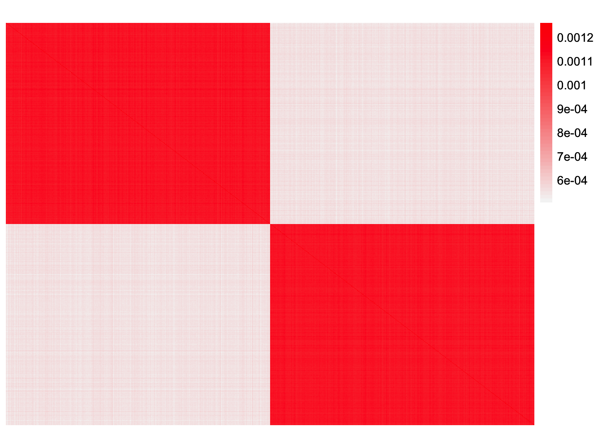
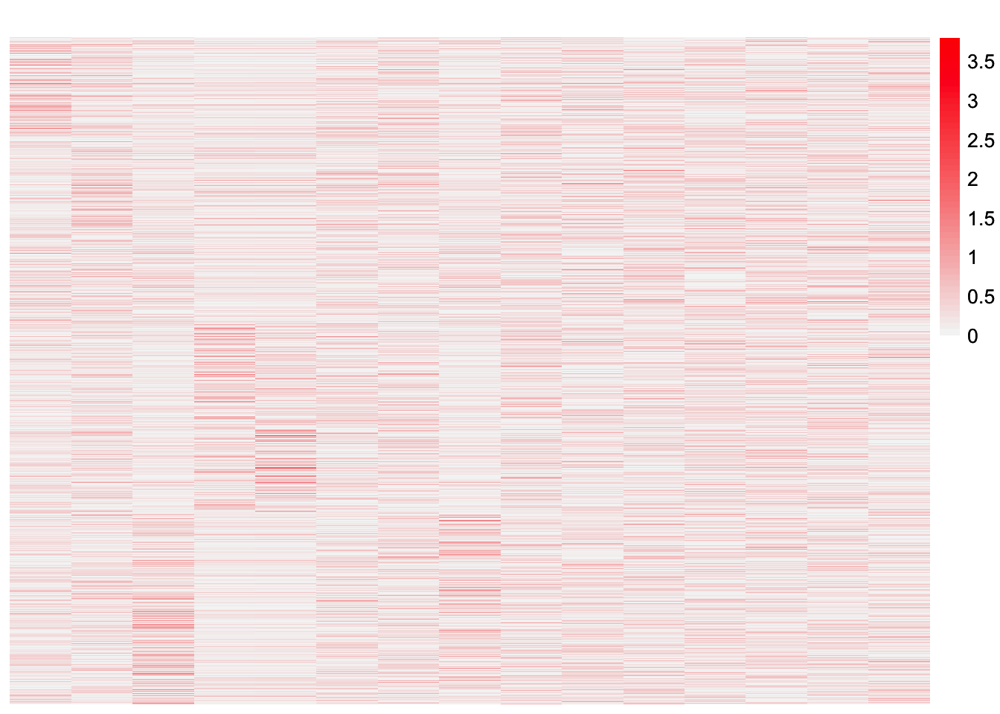

EBCD-subtype-experiments
Annie Xie
2024-05-01
Last updated: 2024-05-20
Checks: 7 0
Knit directory: EBCD_GBCD_comparison/
This reproducible R Markdown analysis was created with workflowr (version 1.7.1). The Checks tab describes the reproducibility checks that were applied when the results were created. The Past versions tab lists the development history.
Great! Since the R Markdown file has been committed to the Git repository, you know the exact version of the code that produced these results.
Great job! The global environment was empty. Objects defined in the global environment can affect the analysis in your R Markdown file in unknown ways. For reproduciblity it’s best to always run the code in an empty environment.
The command set.seed(20240229) was run prior to running
the code in the R Markdown file. Setting a seed ensures that any results
that rely on randomness, e.g. subsampling or permutations, are
reproducible.
Great job! Recording the operating system, R version, and package versions is critical for reproducibility.
Nice! There were no cached chunks for this analysis, so you can be confident that you successfully produced the results during this run.
Great job! Using relative paths to the files within your workflowr project makes it easier to run your code on other machines.
Great! You are using Git for version control. Tracking code development and connecting the code version to the results is critical for reproducibility.
The results in this page were generated with repository version df3c2aa. See the Past versions tab to see a history of the changes made to the R Markdown and HTML files.
Note that you need to be careful to ensure that all relevant files for
the analysis have been committed to Git prior to generating the results
(you can use wflow_publish or
wflow_git_commit). workflowr only checks the R Markdown
file, but you know if there are other scripts or data files that it
depends on. Below is the status of the Git repository when the results
were generated:
Ignored files:
Ignored: .DS_Store
Ignored: .Rhistory
Ignored: code/.DS_Store
Ignored: data/.DS_Store
Untracked files:
Untracked: analysis/EBCD-laplace-splitting.Rmd
Untracked: analysis/ridgeless-regression-comparison.Rmd
Note that any generated files, e.g. HTML, png, CSS, etc., are not included in this status report because it is ok for generated content to have uncommitted changes.
These are the previous versions of the repository in which changes were
made to the R Markdown
(analysis/EBCD-subtype-experiments.Rmd) and HTML
(docs/EBCD-subtype-experiments.html) files. If you’ve
configured a remote Git repository (see ?wflow_git_remote),
click on the hyperlinks in the table below to view the files as they
were in that past version.
| File | Version | Author | Date | Message |
|---|---|---|---|---|
| Rmd | df3c2aa | Annie Xie | 2024-05-20 | wflow_publish("analysis/EBCD-subtype-experiments.Rmd") |
| Rmd | 845fd53 | Annie Xie | 2024-05-08 | Add normal and subtype simulations |
| html | 845fd53 | Annie Xie | 2024-05-08 | Add normal and subtype simulations |
Introduction
In this analysis, I run some experiments to explore when EBCD can find subtype GEPs. The goal of these simulations is to find the simplest setting in which EBCD does not recover all subtype factors.
Package and Functions for Analyses
library(ggplot2)
library(cowplot)
library(RColorBrewer)
library(ggrepel)
library(pheatmap)
library(gridExtra)
#library(Seurat)
library(Matrix)
library(ebnm)
library(flashier)Loading required package: magrittrlibrary(magrittr)
library(ashr)
library(irlba)
library(reshape2)
library(patchwork)
Attaching package: 'patchwork'The following object is masked from 'package:cowplot':
align_plotslibrary(fastTopics)
#source("~/Documents/PhD 3/Research/EBCD/gbcd-workflow/code/fit_cov_ebnmf.R")plot_heatmap <- function(L, title = "", colors_range = c("gray96", "red")){
### define the color map
cols <- colorRampPalette(colors_range)(49)
brks <- seq(min(L), max(L), length=50)
plt <- pheatmap(L, show_rownames = FALSE, show_colnames = FALSE, cluster_rows = FALSE, cluster_cols = FALSE, color = cols, breaks = brks, main = title)
return(plt)
}source("~/Documents/PhD 3/Research/EBCD/ebcd_functions.R")Simulate data under EBCD model (normal noise)
In this simulation, we simulate data from the EBCD model. The loadings matrix, \(L\), is binary and consists of three factors – one baseline factor loaded on all samples, one subtype factor loaded on half of the samples (which can be thought of as corresponding to subtype 1), and a second subtype factor loaded on the other half of the samples (which can be thought of as corresponding to subtype 2). The factor matrix, \(F\), has a block structure and has been rescaled such that \(F^{T}F = I\). Normal noise is then added to the product \(L F^{T}\). The standard deviation of the noise is chosen such that the Gram matrix has a block structure corresponding to the subtype effects.
Hypothesis
Since the data is generated under the same assumptions of the EBCD model with relatively little noise, I hypothesize that EBCD will be able to recover both subtypes.
Analysis
generate_normal_data <- function(noise_sd){
### simulate L
LL <- matrix(0, nrow=800, ncol=3)
LL[,1] <- 1
LL[1:400, 2] <- 1
LL[401:800, 3] <- 1
### simulate F
FF <- matrix(0, nrow=1800, ncol = 3)
FF[1:600,1] <- rnorm(600, mean = 0, sd = 1)
FF[601:1200,2] <- rnorm(600, mean = 0, sd = 1)
FF[1201:1800,3] <- rnorm(600, mean = 0, sd = 1)
FF <- t(t(FF)/apply(FF,2, function(x){return(sqrt(sum(x^2)))}))
##FF <- matrix(rnorm(3 * 2100, sd = 1), ncol = 3)
### generate normal noise
E <- matrix(rnorm(800*1800, mean = 0, sd = noise_sd), ncol = 1800)
### save the simulated data
data <- list(Y = LL %*% t(FF) + E, LL = LL, FF = FF)
return(data)
}Single Analysis
set.seed(2052)
data_norm <- generate_normal_data(0.01)dim(data_norm$Y)[1] 800 1800These are some visualizations of the simulated data. This is a heatmap of the loadings matrix.
plot_heatmap(data_norm$LL)
This is a heatmap of the factor matrix.
plot_heatmap(data_norm$FF, colors_range = c('blue','red'))
This is a heatmap of \(F^{T}F\). This is to check that it is orthogonal.
plot_heatmap(t(data_norm$FF) %*% data_norm$FF)
observed.vals <- data_norm$Y %*% t(data_norm$Y)/ ncol(data_norm$Y)This is a heatmap of the Gram matrix.
plot_heatmap(observed.vals)
We apply EBCD to the data with Kmax = 10 and the
generalized binary prior over the loadings.
set.seed(295)
fit.ebcd <- ebcd(X = t(data_norm$Y), Kmax = 10, ebnm_fn = ebnm::ebnm_generalized_binary)This is a plot of the scaled estimate of \(L\). This estimate is scaled such that the infinity norm for each column is 1, i.e. the maximum value for each column is 1.
plot_heatmap(t(t(fit.ebcd$EL)/apply(fit.ebcd$EL,2, max)))plot_heatmap(fit.ebcd$EL)transformed_Z <- transform_ebcd_Z(t(data_norm$Y), fit.ebcd)This is a plot of the factor matrix.
plot_heatmap(transformed_Z, colors_range = c('blue', 'red'))This is a heatmap of the positive part of the factor matrix.
#heatmap of the positive part of the factor matrix
plot_heatmap(pmax(transformed_Z, 0))
This is a heatmap of the negative part of the factor matrix.
#heatmap of the negative part of the factor matrix
plot_heatmap(pmin(transformed_Z, 0), colors_range = c('red','gray96'))ebcd.fitted.vals <- fit.ebcd$EL %*% t(fit.ebcd$EL)This is a plot of \(LL^{T}\).
plot_heatmap(ebcd.fitted.vals)This is the L2 norm of the difference between the observed values and the fitted values.
sum((observed.vals - ebcd.fitted.vals)^2)[1] 4.608481e-05This is the L2 norm of the difference between the off-diagonal entries of the observed values and fitted values.
sum((observed.vals - ebcd.fitted.vals)^2) - sum((diag(observed.vals) - diag(ebcd.fitted.vals))^2)[1] 3.842179e-05This is a plot of (a subset of) the off-diagonal entries of the fitted values vs. observed values:
set.seed(3952)
diag_idx <- seq(1, prod(dim(observed.vals)), length.out = ncol(observed.vals))
off_diag_idx <- setdiff(c(1:prod(dim(observed.vals))), diag_idx)
samp.vals <- sample(off_diag_idx, size = 100000)ggplot(data = NULL, aes(x = c(as.matrix(observed.vals))[samp.vals], y = c(ebcd.fitted.vals)[samp.vals])) + geom_point() + xlab('Observed Values') + ylab('Fitted Values') + geom_abline(slope = 1, intercept = 0, color = 'red')This is a plot of the diagonal entries of the fitted values vs. the diagonal entries of the observed values:
ggplot(data = NULL, aes(x = diag(as.matrix(observed.vals)), y = diag(ebcd.fitted.vals))) + geom_point() + xlab('Observed Values') + ylab('Fitted Values') + geom_abline(slope = 1, intercept = 0, color = 'red')This is a plot of the progression of the objective function
ggplot(data = NULL, aes(x = c(1:length(fit.ebcd$vec.obj)), y = fit.ebcd$vec.obj)) + geom_line()This is the number of iterations that the backfit did before the convergence criterion was satisfied:
length(fit.ebcd$vec.obj)[1] 895This is the value of the objective function that was attained:
fit.ebcd$vec.obj[length(fit.ebcd$vec.obj)][1] 4595859Repeated Experiments
In this section, we repeat the simulation workflow ten times, generating ten different datasets and applying EBCD to each of them. Then we calculate the proportion of times that EBCD is able to recover each subtype factor.
This function computes numerous datasets for a given noise standard deviation.
generate_normal_datasets <- function(noise_sd, num_datasets){
dataset_list <- list()
for (i in 1:num_datasets){
set.seed(i)
dataset_list[[i]] <- generate_normal_data(noise_sd)
}
return(dataset_list)
}This function determines whether the EBCD estimate recovers the subtype factors by checking the correlation matrix between the EBCD estimate and true loadings matrix.
check_subtype_recovery <- function(true.fit, ebcd.fit){
corr_matrix <- cor(ebcd.fit$EL, true.fit$L[,c(2:3)]) # need first two columns to be subtype
max_corr <- apply(corr_matrix, 2, max)
return(as.numeric(max_corr > 0.9))
}This function computes the proportion of times that EBCD recovers each subtype factor.
compute_subtype_recovery_prop <- function(dataset_list, ebcdfit_list){
recovery_matrix <- matrix(rep(0, 2*length(dataset_list)), ncol = 2)
for (i in 1:length(dataset_list)){
recovery_matrix[i,] <- check_subtype_recovery(dataset_list[[i]], ebcdfit_list[[i]])
}
return(colMeans(recovery_matrix))
}We repeat the experiment ten times and compute the proportion of time EBCD recovers each subtype factor.
multiple_simulation_workflow <- function(noise_sd){
dataset_list <- generate_normal_datasets(noise_sd, 10)
ebcdfit_list <- lapply(dataset_list, function(x){return(ebcd(X = t(x$Y), Kmax = 10, ebnm_fn = ebnm::ebnm_generalized_binary))})
recovery_prop <- compute_subtype_recovery_prop(dataset_list, ebcdfit_list)
return(list(dataset_list = dataset_list, ebcdfit_list = ebcdfit_list, recovery_prop = recovery_prop))
}results <- multiple_simulation_workflow(0.01)Observations
In this setting, EBCD is generally able to find both subtypes when given enough factors. When the simulation workflow is repeated ten times, EBCD is able to find both subtypes every time. There are a few experiments for which EBCD was able to recover both subtype factors within the first 4-5 factors. However, there are other experiments for which EBCD requires more factors to find both subtype factors.
It is interesting to me that in all the experiments, EBCD find many factors that generally correspond to one subtype. I am unsure why it doesn’t combine all of these factors into a single factor. Perhaps it’s related to the factor matrix and, in particular, the orthogonality constraint on the factor matrix.
Notes after meeting with Matthew
I discussed this set of results with Matthew. We tested running EBCD
with Kmax = 3, and found that it did not find the correct
loadings matrix. However, the estimate it did return still fit the
observed data well. We believe that EBCD converged to a different
loadings matrix that does not require the second subtype GEP. Here is a
concrete example:
- \[\begin{bmatrix} 0\\ \sqrt{3/4} \end{bmatrix} \begin{bmatrix} 0 & \sqrt{3/4}\\ \end{bmatrix}\]
(and perhaps it is breaking the second vector down even further). We think that this is happening because we are using the generalized binary prior which does not force the loading vectors to be binary; it just encourages it. On the other hand, we hypothesize that GBCD is able to recovery these binary loadings vectors because of its use of the laplace prior and then splitting – this harkens back to ideas in Jason’s thesis regarding the drift factorization and the divergence factorization.
Simulate data under EBCD model, vary standard deviation
In the previous simulations, I chose the standard deviation of the noise such that the Gram matrix had a visible block structure. A block structure is expected due to the subtype effects modeled in the loadings matrix. For larger standard deviations, the Gram matrix does not have an apparent block structure. As the standard deviation decreases, the block structure in the Gram matrix becomes more apparent and/or clearer.
In the previous setting, EBCD was able to recover both subtype factors. However, I wanted to test how the standard deviation of the noise affects this. In this section, I run the same analyses as above for different standard deviation values, and assess how well EBCD performs at each level.
Hypothesis
Higher standard deviation values blur the block structure in the Gram matrix. Therefore, I suspect that in these settings, EBCD will have a more difficult time recovering both subtype factors. I am unsure if EBCD will be able to recover one of the two subtype factors or if it will struggle to find either of them. Given that the magnitude of effect for both subtypes is the same, I can’t see why EBCD would be able to find one and not the other.
Analysis
Single experiment
set.seed(2052)
data_sd0.01 <- generate_normal_data(0.01)
data_sd0.05 <- generate_normal_data(0.05)
data_sd0.15 <- generate_normal_data(0.15)
data_sd0.2 <- generate_normal_data(0.2)
data_sd0.5 <- generate_normal_data(0.5)observed.vals_sd0.01 <- data_sd0.01$Y %*% t(data_sd0.01$Y)/ ncol(data_sd0.01$Y)
observed.vals_sd0.05 <- data_sd0.05$Y %*% t(data_sd0.05$Y)/ ncol(data_sd0.05$Y)
observed.vals_sd0.15 <- data_sd0.15$Y %*% t(data_sd0.15$Y)/ ncol(data_sd0.15$Y)
observed.vals_sd0.2 <- data_sd0.2$Y %*% t(data_sd0.2$Y)/ ncol(data_sd0.2$Y)
observed.vals_sd0.5 <- data_sd0.5$Y %*% t(data_sd0.5$Y)/ ncol(data_sd0.5$Y)This is a heatmap of the Gram matrix for standard deviation = 0.01.
plot_heatmap(observed.vals_sd0.01)
This is a heatmap of the Gram matrix for standard deviation = 0.05.
plot_heatmap(observed.vals_sd0.05)
This is a heatmap of the Gram matrix for standard deviation = 0.15.
plot_heatmap(observed.vals_sd0.15)
This is a heatmap of the Gram matrix for standard deviation = 0.2.
plot_heatmap(observed.vals_sd0.2)
This is a heatmap of the Gram matrix for standard deviation = 0.5.
plot_heatmap(observed.vals_sd0.5)
We apply EBCD with Kmax = 10 and the generalized binary
prior over the loadings.
set.seed(295)
fit.ebcd_sd0.01 <- ebcd(X = t(data_sd0.01$Y), Kmax = 10, ebnm_fn = ebnm::ebnm_generalized_binary)
fit.ebcd_sd0.05 <- ebcd(X = t(data_sd0.05$Y), Kmax = 10, ebnm_fn = ebnm::ebnm_generalized_binary)
fit.ebcd_sd0.15 <- ebcd(X = t(data_sd0.15$Y), Kmax = 10, ebnm_fn = ebnm::ebnm_generalized_binary)
fit.ebcd_sd0.2 <- ebcd(X = t(data_sd0.2$Y), Kmax = 10, ebnm_fn = ebnm::ebnm_generalized_binary)
fit.ebcd_sd0.5 <- ebcd(X = t(data_sd0.5$Y), Kmax = 10, ebnm_fn = ebnm::ebnm_generalized_binary)These are visualizations for standard deviation = 0.01:
plot_heatmap(t(t(fit.ebcd_sd0.01$EL)/apply(fit.ebcd_sd0.01$EL,2, max)))ebcd.fitted.vals_sd0.01 <- fit.ebcd_sd0.01$EL %*% t(fit.ebcd_sd0.01$EL)ggplot(data = NULL, aes(x = c(as.matrix(observed.vals_sd0.01))[samp.vals], y = c(ebcd.fitted.vals_sd0.01)[samp.vals])) + geom_point() + xlab('Observed Values') + ylab('Fitted Values') + geom_abline(slope = 1, intercept = 0, color = 'red') + labs(title="Subsample of Off Diangle entries for SD = 0.01")
ggplot(data = NULL, aes(x = diag(as.matrix(observed.vals_sd0.01)), y = diag(ebcd.fitted.vals_sd0.01))) + geom_point() + xlab('Observed Values') + ylab('Fitted Values') + geom_abline(slope = 1, intercept = 0, color = 'red') + labs(title="Diagonal entries for SD = 0.01")These are visualizations for standard deviation = 0.05:
plot_heatmap(t(t(fit.ebcd_sd0.05$EL)/apply(fit.ebcd_sd0.05$EL,2, max)))
ebcd.fitted.vals_sd0.05 <- fit.ebcd_sd0.05$EL %*% t(fit.ebcd_sd0.05$EL)ggplot(data = NULL, aes(x = c(as.matrix(observed.vals_sd0.05))[samp.vals], y = c(ebcd.fitted.vals_sd0.05)[samp.vals])) + geom_point() + xlab('Observed Values') + ylab('Fitted Values') + geom_abline(slope = 1, intercept = 0, color = 'red') + labs(title="Subsample of Off Diangle entries for SD = 0.05")
ggplot(data = NULL, aes(x = diag(as.matrix(observed.vals_sd0.05)), y = diag(ebcd.fitted.vals_sd0.05))) + geom_point() + xlab('Observed Values') + ylab('Fitted Values') + geom_abline(slope = 1, intercept = 0, color = 'red') + labs(title="Diagonal entries for SD = 0.05")
These are visualizations for standard deviation = 0.15:
plot_heatmap(t(t(fit.ebcd_sd0.15$EL)/apply(fit.ebcd_sd0.15$EL,2, max)))
ebcd.fitted.vals_sd0.15 <- fit.ebcd_sd0.15$EL %*% t(fit.ebcd_sd0.15$EL)ggplot(data = NULL, aes(x = c(as.matrix(observed.vals_sd0.15))[samp.vals], y = c(ebcd.fitted.vals_sd0.15)[samp.vals])) + geom_point() + xlab('Observed Values') + ylab('Fitted Values') + geom_abline(slope = 1, intercept = 0, color = 'red') + labs(title="Subsample of Off Diangle entries for SD = 0.15")ggplot(data = NULL, aes(x = diag(as.matrix(observed.vals_sd0.15)), y = diag(ebcd.fitted.vals_sd0.15))) + geom_point() + xlab('Observed Values') + ylab('Fitted Values') + geom_abline(slope = 1, intercept = 0, color = 'red') + labs(title="Diagonal entries for SD = 0.15")
These are visualizations for standard deviation = 0.2:
plot_heatmap(t(t(fit.ebcd_sd0.2$EL)/apply(fit.ebcd_sd0.2$EL,2, max)))
ebcd.fitted.vals_sd0.2 <- fit.ebcd_sd0.2$EL %*% t(fit.ebcd_sd0.2$EL)ggplot(data = NULL, aes(x = c(as.matrix(observed.vals_sd0.2))[samp.vals], y = c(ebcd.fitted.vals_sd0.2)[samp.vals])) + geom_point() + xlab('Observed Values') + ylab('Fitted Values') + geom_abline(slope = 1, intercept = 0, color = 'red') + labs(title="Subsample of Off Diangle entries for SD = 0.2")
ggplot(data = NULL, aes(x = diag(as.matrix(observed.vals_sd0.2)), y = diag(ebcd.fitted.vals_sd0.2))) + geom_point() + xlab('Observed Values') + ylab('Fitted Values') + geom_abline(slope = 1, intercept = 0, color = 'red') + labs(title="Diagonal entries for SD = 0.2")
These are visualizations for standard deviation = 0.5:
plot_heatmap(t(t(fit.ebcd_sd0.5$EL)/apply(fit.ebcd_sd0.5$EL,2, max)))
ebcd.fitted.vals_sd0.5 <- fit.ebcd_sd0.5$EL %*% t(fit.ebcd_sd0.5$EL)ggplot(data = NULL, aes(x = c(as.matrix(observed.vals_sd0.5))[samp.vals], y = c(ebcd.fitted.vals_sd0.5)[samp.vals])) + geom_point() + xlab('Observed Values') + ylab('Fitted Values') + geom_abline(slope = 1, intercept = 0, color = 'red') + labs(title="Subsample of Off Diangle entries for SD = 0.5")
ggplot(data = NULL, aes(x = diag(as.matrix(observed.vals_sd0.5)), y = diag(ebcd.fitted.vals_sd0.5))) + geom_point() + xlab('Observed Values') + ylab('Fitted Values') + geom_abline(slope = 1, intercept = 0, color = 'red') + labs(title="Diagonal entries for SD = 0.5")
Repeated experiments
In this section, we repeat the simulation workflow ten times, generating ten different datasets for each standard deviation value and applying EBCD to each. For each standard deviation value, we calculate the proportion of times that EBCD is able to recover each subtype factor.
noise_sds <- c(0.01,0.05,0.1,0.3,0.5)
recovery_prop_sds <- matrix(rep(0, 2*length(noise_sds)), ncol = 2)
for (j in 1:length(noise_sds)){
print(noise_sds[j])
dataset_list <- generate_normal_datasets(noise_sds[j], 10)
ebcdfit_list <- lapply(dataset_list, function(x){return(ebcd(X = t(x$Y), Kmax = 10, ebnm_fn = ebnm::ebnm_generalized_binary))})
recovery_prop <- compute_subtype_recovery_prop(dataset_list, ebcdfit_list)
recovery_prop_sds[j,] <- recovery_prop
}Observations
As predicted, as the standard deviation of the noise increases, the recovery proportion of the subtype decreases. For small standard deviation values, e.g. 0.01 or 0.05, EBCD is able to recover both subtypes in all instances. For larger standard deviation values, e.g. 0.5 or 1, EBCD is not able to recover both subtypes. Based off of the single experiment analysis, it looks like EBCD might just recover a bunch of shared GEPs and does not recover any GEPs that resemble subtype effects. For middle-of-the-range standard deviation values, e.g. 0.15 or 0.2, EBCD is only able to find subtype GEPs a fraction of the time. From the single experiment results, it looks like EBCD can find one of the two subtype effects, but struggles to find the second subtype effect, or the effect it finds is very sparse (too sparse to be considered an accurate recovery of the effect). I will look into this in the next section.
Closer look at SD = 0.15
These are some visualizations of the simulated data. This is a heatmap of the loadings matrix.
plot_heatmap(data_sd0.15$LL)
This is a heatmap of \(F^{T}F\). This is to check that it is orthogonal.
plot_heatmap(t(data_sd0.15$FF) %*% data_sd0.15$FF)
This is a heatmap of the Gram matrix.
plot_heatmap(observed.vals_sd0.15)
This is a plot of the scaled estimate of \(L\). This estimate is scaled such that the infinity norm for each column is 1, i.e. the maximum value for each column is 1.
plot_heatmap(t(t(fit.ebcd_sd0.15$EL)/apply(fit.ebcd_sd0.15$EL,2, max)))
cor(fit.ebcd_sd0.15$EL, data_sd0.15$LL[,c(2,3)]) [,1] [,2]
[1,] -0.54786434 0.54786434
[2,] 0.97053810 -0.97053810
[3,] 0.47264126 -0.47264126
[4,] 0.42946825 -0.42946825
[5,] 0.42040753 -0.42040753
[6,] -0.63632538 0.63632538
[7,] -0.03808361 0.03808361
[8,] -0.05623888 0.05623888
[9,] -0.07148017 0.07148017
[10,] -0.05692042 0.05692042transformed_Z <- transform_ebcd_Z(t(data_sd0.15$Y), fit.ebcd_sd0.15)This is a plot of the factor matrix.
plot_heatmap(transformed_Z, colors_range = c('blue', 'red'))
This is a heatmap of the positive part of the factor matrix.
#heatmap of the positive part of the factor matrix
plot_heatmap(pmax(transformed_Z, 0))
This is a heatmap of the negative part of the factor matrix.
#heatmap of the negative part of the factor matrix
plot_heatmap(pmin(transformed_Z, 0), colors_range = c('red','gray96'))
ebcd.fitted.vals <- fit.ebcd$EL %*% t(fit.ebcd$EL)This is a plot of \(LL^{T}\).
plot_heatmap(ebcd.fitted.vals_sd0.15)
plot_heatmap(observed.vals_sd0.15)
This is the L2 norm of the difference between the observed values and the fitted values.
sum((observed.vals_sd0.15 - ebcd.fitted.vals_sd0.15)^2)[1] 0.6006115This is the L2 norm of the difference between the off-diagonal entries of the observed values and fitted values.
sum((observed.vals_sd0.15 - ebcd.fitted.vals_sd0.15)^2) - sum((diag(observed.vals_sd0.15) - diag(ebcd.fitted.vals_sd0.15))^2)[1] 0.2103414This is a plot of (a subset of) the off-diagonal entries of the fitted values vs. observed values:
ggplot(data = NULL, aes(x = c(as.matrix(observed.vals_sd0.15))[samp.vals], y = c(ebcd.fitted.vals_sd0.15)[samp.vals])) + geom_point() + xlab('Observed Values') + ylab('Fitted Values') + geom_abline(slope = 1, intercept = 0, color = 'red') + labs(title="Subsample of Off Diangle entries for SD = 0.15")
This is a plot of the diagonal entries of the fitted values vs. the diagonal entries of the observed values:
ggplot(data = NULL, aes(x = diag(as.matrix(observed.vals_sd0.15)), y = diag(ebcd.fitted.vals_sd0.15))) + geom_point() + xlab('Observed Values') + ylab('Fitted Values') + geom_abline(slope = 1, intercept = 0, color = 'red') + labs(title="Diagonal entries for SD = 0.15")
This is a plot of the progression of the objective function
ggplot(data = NULL, aes(x = c(1:length(fit.ebcd_sd0.15$vec.obj)), y = fit.ebcd_sd0.15$vec.obj)) + geom_line()
This is the number of iterations that the backfit did before the convergence criterion was satisfied:
length(fit.ebcd_sd0.15$vec.obj)[1] 113This is the value of the objective function that was attained:
fit.ebcd$vec.obj[length(fit.ebcd_sd0.15$vec.obj)][1] 4593881Observations
It looks like perhaps in this setting (where there are subtype effects, but they are not super strong), EBCD can pick up on a subtype effect, but the loadings themselves are sparse (too sparse to be considered accurately “recovered”).
Also, in this setting, the EBCD result doesn’t have a particularly good fit. This is what we would expect given that it cannot pick up on the second subtype effect. There are situations in which EBCD doesn’t pick up on a subtype effect, but it still manages to get a good fit, which is confusing and counter-intuitive.
Data with patient and subtype effects
In the previous simulations, we only consider a baseline factor and two subtype factors. In this simulation, we add “patient effects”. Same as before, we simulate data from the EBCD model. The loadings matrix, \(L\), is binary and consists of seven factors – one baseline factor loaded on all samples, two subtype factors (each loaded on half of the samples) and four patient factors (each loaded on one-fourth of the samples). The factor matrix, \(F\), again has a block structure and has been rescaled such that \(F^{T}F = I\). Normal noise is then added to the product \(L F^{T}\). The standard deviation of the noise is chosen such that the Gram matrix has a block structure corresponding to the subtype effects.
Hypothesis
Similar to before, since the data is generated under the same assumptions of the EBCD model with relatively little noise, I hypothesize that EBCD will be able to recover both subtype effects and all the patient effects.
Analysis
generate_normal_data_patient <- function(noise_sd){
### simulate L
LL <- matrix(0, nrow=800, ncol=7)
LL[,1] <- 1
LL[1:400, 2] <- 1
LL[401:800, 3] <- 1
LL[1:200,4] <- 1
LL[201:400, 5] <- 1
LL[401:600, 6] <- 1
LL[601:800, 7] <- 1
### simulate F
FF <- matrix(0, nrow=2100, ncol = 7)
FF[1:300,1] <- rnorm(300, mean = 0, sd = 1)
FF[301:600,2] <- rnorm(300, mean = 0, sd = 1)
FF[601:900,3] <- rnorm(300, mean = 0, sd = 1)
FF[901:1200, 4] <- rnorm(300, mean = 0, sd = 1)
FF[1201:1500, 5] <- rnorm(300, mean = 0, sd = 1)
FF[1501:1800,6] <- rnorm(300, mean = 0, sd = 1)
FF[1801:2100, 7] <- rnorm(300, mean = 0, sd = 1)
FF <- t(t(FF)/apply(FF,2, function(x){return(sqrt(sum(x^2)))}))
##FF <- matrix(rnorm(3 * 2100, sd = 1), ncol = 3)
### generate normal noise
E <- matrix(rnorm(800*2100, mean = 0, sd = noise_sd), ncol = 2100)
### save the simulated data
data <- list(Y = LL %*% t(FF) + E, LL = LL, FF = FF)
return(data)
}Single Analysis
set.seed(2052)
data_norm_patient <- generate_normal_data_patient(0.01)dim(data_norm_patient$Y)[1] 800 2100plot_heatmap(data_norm_patient$LL)
plot_heatmap(t(data_norm_patient$FF) %*% data_norm_patient$FF)
observed.vals_patient <- data_norm_patient$Y %*% t(data_norm_patient$Y)/ ncol(data_norm_patient$Y)plot_heatmap(observed.vals_patient)set.seed(295)
fit.ebcd_patient <- ebcd(X = t(data_norm_patient$Y), Kmax = 15, ebnm_fn = ebnm::ebnm_generalized_binary)This is a plot of the scaled estimate of \(L\). This estimate is scaled such that the infinity norm for each column is 1, i.e. the maximum value for each column is 1.
plot_heatmap(t(t(fit.ebcd_patient$EL)/apply(fit.ebcd_patient$EL,2, max)))
This is a plot of the factor matrix.
transformed_Z_patient <- transform_ebcd_Z(t(data_norm_patient$Y), fit.ebcd_patient)plot_heatmap(transformed_Z_patient, colors_range = c('blue', 'red'))This is a heatmap of the positive part of the factor matrix.
#heatmap of the positive part of the factor matrix
plot_heatmap(pmax(transformed_Z_patient, 0))
This is a heatmap of the negative part of the factor matrix.
#heatmap of the negative part of the factor matrix
plot_heatmap(pmin(transformed_Z_patient, 0), colors_range = c('red','gray96'))
ebcd.fitted.vals_patient <- fit.ebcd_patient$EL %*% t(fit.ebcd_patient$EL)This is a plot of \(LL^{T}\).
plot_heatmap(ebcd.fitted.vals_patient)
This is a plot of the Gram matrix.
plot_heatmap(observed.vals_patient)
sum((observed.vals_patient - ebcd.fitted.vals_patient)^2)[1] 7.000991e-05sum((observed.vals_patient - ebcd.fitted.vals_patient)^2) - sum((diag(observed.vals_patient) - diag(ebcd.fitted.vals_patient))^2)[1] 6.247311e-05This is a plot of (a subset of) the fitted values vs. observed values:
set.seed(3952)
diag_idx <- seq(1, prod(dim(observed.vals_patient)), length.out = ncol(observed.vals_patient))
off_diag_idx <- setdiff(c(1:prod(dim(observed.vals_patient))), diag_idx)
samp.vals <- sample(off_diag_idx, size = 100000)ggplot(data = NULL, aes(x = c(as.matrix(observed.vals_patient))[samp.vals], y = c(ebcd.fitted.vals_patient)[samp.vals])) + geom_point() + xlab('Observed Values') + ylab('Fitted Values') + geom_abline(slope = 1, intercept = 0, color = 'red')
This is a plot of the diagonal entries of the fitted values vs. the diagonal entries of the observed values:
ggplot(data = NULL, aes(x = diag(as.matrix(observed.vals_patient)), y = diag(ebcd.fitted.vals_patient))) + geom_point() + xlab('Observed Values') + ylab('Fitted Values') + geom_abline(slope = 1, intercept = 0, color = 'red')This is a plot of the progression of the objective function
ggplot(data = NULL, aes(x = c(1:length(fit.ebcd_patient$vec.obj)), y = fit.ebcd_patient$vec.obj)) + geom_line()
This is the number of iterations that the backfit did before the convergence criterion was satisfied:
length(fit.ebcd_patient$vec.obj)[1] 213This is the value of the objective function that was attained:
fit.ebcd_patient$vec.obj[length(fit.ebcd_patient$vec.obj)][1] 5365536Repeated Experiments
In this section, we repeat the simulation workflow ten times, generating ten different datasets and applying EBCD to each of them. Then we calculate the proportion of times that EBCD is able to recover each subtype factor.
This function computes numerous datasets for a given noise standard deviation.
generate_normal_patient_datasets <- function(noise_sd, num_datasets){
dataset_list <- list()
for (i in 1:num_datasets){
set.seed(i)
dataset_list[[i]] <- generate_normal_data_patient(noise_sd)
}
return(dataset_list)
}We repeat the experiment ten times and compute the proportion of time EBCD recovers each subtype factor.
multiple_patient_simulation_workflow <- function(noise_sd){
dataset_list <- generate_normal_patient_datasets(noise_sd, 10)
ebcdfit_list <- lapply(dataset_list, function(x){return(ebcd(X = t(x$Y), Kmax = 15, ebnm_fn = ebnm::ebnm_generalized_binary))})
recovery_prop <- compute_subtype_recovery_prop(dataset_list, ebcdfit_list)
return(list(dataset_list = dataset_list, ebcdfit_list = ebcdfit_list, recovery_prop = recovery_prop))
}results_patient <- multiple_patient_simulation_workflow(0.01)Observations
In this setting, EBCD was able to recover both subtype GEPs. In
addition, it looks like EBCD was also able to recover all of the patient
effects in separate GEPs. When I repeated the experiment with ten
simulated datasets, EBCD was able to recover both subtypes in every
dataset. The EBCD estimate for the Gram matrix, \(LL^{T}\) does a good job at fitting the
data. In the fitted values vs. observed values plot, we see three groups
of points along the y=x line. I think the three groups
correspond to samples that do not share subtype or patient, samples that
share subtype but not patient, and samples that share patient (and thus
also subtype).
Data with patient and subtype effects, varying noise SD
Similar to the subtype-only simulations, I chose the standard deviation of the noise such that the Gram matrix had a visible block structure. Again, I wanted to test how the standard deviation of the noise affects the performance of EBCD. In this section, I run the same analyses as above for different standard deviation values, and assess how well EBCD performs at each level.
Hypothesis
Higher standard deviation values blur the block structure in the Gram matrix. Therefore, I suspect that in these settings, EBCD will have a more difficult time recovering all of the subtype and patient effects.
Analysis
Single Analysis
set.seed(2052)
data_norm_patient_sd0.1 <- generate_normal_data_patient(0.1)
data_norm_patient_sd0.2 <- generate_normal_data_patient(0.2)
data_norm_patient_sd0.5 <- generate_normal_data_patient(0.5)observed.vals_patient_sd0.1 <- data_norm_patient_sd0.1$Y %*% t(data_norm_patient_sd0.1$Y)/ ncol(data_norm_patient_sd0.1$Y)
observed.vals_patient_sd0.2 <- data_norm_patient_sd0.2$Y %*% t(data_norm_patient_sd0.2$Y)/ ncol(data_norm_patient_sd0.2$Y)
observed.vals_patient_sd0.5 <- data_norm_patient_sd0.5$Y %*% t(data_norm_patient_sd0.5$Y)/ ncol(data_norm_patient_sd0.5$Y)set.seed(295)
fit.ebcd_patient_sd0.1 <- ebcd(X = t(data_norm_patient_sd0.1$Y), Kmax = 15, ebnm_fn = ebnm::ebnm_generalized_binary)
fit.ebcd_patient_sd0.2 <- ebcd(X = t(data_norm_patient_sd0.2$Y), Kmax = 15, ebnm_fn = ebnm::ebnm_generalized_binary)
fit.ebcd_patient_sd0.5 <- ebcd(X = t(data_norm_patient_sd0.5$Y), Kmax = 15, ebnm_fn = ebnm::ebnm_generalized_binary)These are the visualizations and analyses for standard deviation = 0.1:
plot_heatmap(observed.vals_patient_sd0.1)
plot_heatmap(t(t(fit.ebcd_patient_sd0.1$EL)/apply(fit.ebcd_patient_sd0.1$EL,2, max)))
cor(fit.ebcd_patient_sd0.1$EL, data_norm_patient_sd0.1$LL[,c(-1)]) [,1] [,2] [,3] [,4] [,5]
[1,] -0.394295105 0.394295105 -0.239482210 -0.215810560 0.209366590
[2,] 0.956825164 -0.956825164 0.537975779 0.566870754 -0.548736279
[3,] -0.570329499 0.570329499 -0.325638224 -0.332921555 0.991475481
[4,] 0.573402542 -0.573402542 0.993162401 -0.331054178 -0.331053974
[5,] 0.568689907 -0.568689907 -0.318739053 0.975405595 -0.328333297
[6,] 0.746416888 -0.746416888 0.331677955 0.530210028 -0.427728000
[7,] 0.669482826 -0.669482826 0.377095152 0.395957028 -0.399188093
[8,] -0.573053055 0.573053055 -0.326589756 -0.335114915 -0.318956355
[9,] 0.740874450 -0.740874450 0.385640038 0.469848088 -0.431057078
[10,] -0.781892185 0.781892185 -0.454412816 -0.448438511 0.241343697
[11,] -0.731835508 0.731835508 -0.422575471 -0.422475384 0.280076913
[12,] -0.055108223 0.055108223 -0.041992798 -0.021640696 0.002799782
[13,] -0.005594733 0.005594733 0.002167507 -0.008627748 0.009475405
[14,] 0.197673937 -0.197673937 0.094988813 0.133265388 -0.083523585
[15,] 0.018819326 -0.018819326 -0.010413510 0.032144196 -0.031521350
[,6]
[1,] 0.245926180
[2,] -0.556110253
[3,] -0.332915702
[4,] -0.331054249
[5,] -0.328333245
[6,] -0.434159983
[7,] -0.373864087
[8,] 0.980661026
[9,] -0.424431048
[10,] 0.661507630
[11,] 0.564973943
[12,] 0.060833712
[13,] -0.003015164
[14,] -0.144730616
[15,] 0.009790665ebcd.fitted.vals_patient_sd0.1 <- fit.ebcd_patient_sd0.1$EL %*% t(fit.ebcd_patient_sd0.1$EL)plot_heatmap(ebcd.fitted.vals_patient_sd0.1)
ggplot(data = NULL, aes(x = c(as.matrix(observed.vals_patient_sd0.1))[samp.vals], y = c(ebcd.fitted.vals_patient_sd0.1)[samp.vals])) + geom_point() + xlab('Observed Values') + ylab('Fitted Values') + geom_abline(slope = 1, intercept = 0, color = 'red')
ggplot(data = NULL, aes(x = diag(as.matrix(observed.vals_patient_sd0.1)), y = diag(ebcd.fitted.vals_patient_sd0.1))) + geom_point() + xlab('Observed Values') + ylab('Fitted Values') + geom_abline(slope = 1, intercept = 0, color = 'red')
These are the visualizations and analyses for standard deviation = 0.2:
plot_heatmap(observed.vals_patient_sd0.2)
plot_heatmap(t(t(fit.ebcd_patient_sd0.2$EL)/apply(fit.ebcd_patient_sd0.2$EL,2, max)))
cor(fit.ebcd_patient_sd0.2$EL, data_norm_patient_sd0.2$LL[,c(-1)]) [,1] [,2] [,3] [,4] [,5]
[1,] 0.28424239 -0.28424239 0.099457496 0.228757344 -0.300907561
[2,] -0.89219058 0.89219058 -0.507006267 -0.523206681 0.411820939
[3,] 0.54297475 -0.54297475 0.949757055 -0.322783817 -0.316594864
[4,] -0.52245888 0.52245888 -0.276815996 -0.326467557 0.923593709
[5,] -0.35934868 0.35934868 -0.178282734 -0.236657375 -0.138556437
[6,] 0.51789116 -0.51789116 -0.100132884 0.698142086 -0.273375675
[7,] 0.08649082 -0.08649082 0.033675457 0.066195540 0.025655066
[8,] 0.03783605 -0.03783605 -0.047955234 0.091644540 0.005206785
[9,] 0.01957553 -0.01957553 0.021456055 0.001147825 -0.052261753
[10,] -0.05472038 0.05472038 -0.077232072 0.014046422 0.067313205
[11,] 0.03595669 -0.03595669 -0.011046212 0.052565423 -0.008111779
[12,] -0.06417813 0.06417813 -0.016594112 -0.057512406 0.061530266
[13,] -0.04004153 0.04004153 0.015987823 -0.062223797 0.023741712
[14,] 0.05104631 -0.05104631 -0.004135394 0.063078594 0.011616938
[15,] 0.04456596 -0.04456596 -0.033944811 0.085405148 -0.005062602
[,6]
[1,] -0.027307279
[2,] 0.618392009
[3,] -0.310378375
[4,] -0.320310157
[5,] 0.553496546
[6,] -0.324633527
[7,] -0.125526064
[8,] -0.048896092
[9,] 0.029657873
[10,] -0.004127555
[11,] -0.033407433
[12,] 0.012576252
[13,] 0.022494261
[14,] -0.070560138
[15,] -0.046397735ebcd.fitted.vals_patient_sd0.2 <- fit.ebcd_patient_sd0.2$EL %*% t(fit.ebcd_patient_sd0.2$EL)plot_heatmap(ebcd.fitted.vals_patient_sd0.2)
ggplot(data = NULL, aes(x = c(as.matrix(observed.vals_patient_sd0.2))[samp.vals], y = c(ebcd.fitted.vals_patient_sd0.2)[samp.vals])) + geom_point() + xlab('Observed Values') + ylab('Fitted Values') + geom_abline(slope = 1, intercept = 0, color = 'red')
ggplot(data = NULL, aes(x = diag(as.matrix(observed.vals_patient_sd0.2)), y = diag(ebcd.fitted.vals_patient_sd0.2))) + geom_point() + xlab('Observed Values') + ylab('Fitted Values') + geom_abline(slope = 1, intercept = 0, color = 'red')
These are the visualizations and analyses for standard deviation = 0.5:
plot_heatmap(observed.vals_patient_sd0.5)
plot_heatmap(t(t(fit.ebcd_patient_sd0.5$EL)/apply(fit.ebcd_patient_sd0.5$EL,2, max)))
cor(fit.ebcd_patient_sd0.5$EL, data_norm_patient_sd0.5$LL[,c(-1)]) [,1] [,2] [,3] [,4] [,5]
[1,] 0.045275432 -0.045275432 0.066009107 -0.0137295412 -0.007205106
[2,] -0.501857309 0.501857309 -0.282592708 -0.2969021971 0.301328550
[3,] 0.059501195 -0.059501195 0.060090562 0.0086154998 0.040979275
[4,] 0.034659855 -0.034659855 0.046475537 -0.0064537838 -0.018730635
[5,] 0.003166946 -0.003166946 -0.105910891 0.1095677651 -0.019291777
[6,] 0.016418783 -0.016418783 -0.024732238 0.0436910160 -0.071326155
[7,] -0.048194157 0.048194157 -0.076438011 0.0207881916 0.026317476
[8,] -0.039269885 0.039269885 -0.002594753 -0.0427502041 0.009462949
[9,] -0.205513531 0.205513531 -0.098134611 -0.1391719735 0.148668890
[10,] 0.108878878 -0.108878878 -0.056925241 0.1826477409 -0.038534787
[11,] 0.085207909 -0.085207909 0.097684660 0.0007049583 -0.087726920
[12,] 0.168296602 -0.168296602 0.105347844 0.0889843328 -0.085497058
[13,] 0.099490183 -0.099490183 0.053958804 0.0609225635 -0.108800642
[14,] 0.005766054 -0.005766054 -0.046434139 0.0530922047 -0.043677506
[15,] 0.145145321 -0.145145321 0.042609782 0.1249895978 -0.040894965
[,6]
[1,] -0.045074460
[2,] 0.278166355
[3,] -0.109685338
[4,] -0.021291118
[5,] 0.015634903
[6,] 0.052367377
[7,] 0.029332343
[8,] 0.035882008
[9,] 0.088637695
[10,] -0.087187713
[11,] -0.010662698
[12,] -0.108835120
[13,] -0.006080726
[14,] 0.037019441
[15,] -0.126704415ebcd.fitted.vals_patient_sd0.5 <- fit.ebcd_patient_sd0.5$EL %*% t(fit.ebcd_patient_sd0.5$EL)plot_heatmap(ebcd.fitted.vals_patient_sd0.5)
ggplot(data = NULL, aes(x = c(as.matrix(observed.vals_patient_sd0.5))[samp.vals], y = c(ebcd.fitted.vals_patient_sd0.5)[samp.vals])) + geom_point() + xlab('Observed Values') + ylab('Fitted Values') + geom_abline(slope = 1, intercept = 0, color = 'red')
ggplot(data = NULL, aes(x = diag(as.matrix(observed.vals_patient_sd0.5)), y = diag(ebcd.fitted.vals_patient_sd0.5))) + geom_point() + xlab('Observed Values') + ylab('Fitted Values') + geom_abline(slope = 1, intercept = 0, color = 'red')
Observations
As expected, as the standard deviation increased, EBCD’s ability to recover the subtype and patient effects decreased. For the largest tested value, 0.5, EBCD can only recover one of the subtypes, and even then, the loadings are very sparse and don’t fully capture the subtype effect. For the middle value tested, 0.2, EBCD was able to recover one of the subtype GEPs, but not both. It was able to recover effects that resemble the patient effects, but it’s not a perfect recovery. For the lowest value tested, 0.1, EBCD was able to recover one subtype and all the patient effects well. It was also able to recover something that resembles the second subtype, but it is not a perfect recovery due to sparsity in the loadings.
One observation is that all of the estimates have additional sparse shared GEPs. I’m not exactly sure why EBCD keeps these additional GEPs. Maybe EBCD is overfitting a little bit to the noise?
sessionInfo()R version 4.3.2 (2023-10-31)
Platform: aarch64-apple-darwin20 (64-bit)
Running under: macOS Sonoma 14.4.1
Matrix products: default
BLAS: /Library/Frameworks/R.framework/Versions/4.3-arm64/Resources/lib/libRblas.0.dylib
LAPACK: /Library/Frameworks/R.framework/Versions/4.3-arm64/Resources/lib/libRlapack.dylib; LAPACK version 3.11.0
locale:
[1] en_US.UTF-8/en_US.UTF-8/en_US.UTF-8/C/en_US.UTF-8/en_US.UTF-8
time zone: America/Chicago
tzcode source: internal
attached base packages:
[1] stats graphics grDevices utils datasets methods base
other attached packages:
[1] fastTopics_0.6-142 patchwork_1.2.0 reshape2_1.4.4 irlba_2.3.5.1
[5] ashr_2.2-63 flashier_1.0.7 magrittr_2.0.3 ebnm_1.1-2
[9] Matrix_1.6-5 gridExtra_2.3 pheatmap_1.0.12 ggrepel_0.9.5
[13] RColorBrewer_1.1-3 cowplot_1.1.3 ggplot2_3.5.1 workflowr_1.7.1
loaded via a namespace (and not attached):
[1] pbapply_1.7-2 rlang_1.1.3 git2r_0.33.0 horseshoe_0.2.0
[5] compiler_4.3.2 getPass_0.2-4 callr_3.7.6 vctrs_0.6.5
[9] quantreg_5.97 quadprog_1.5-8 stringr_1.5.1 pkgconfig_2.0.3
[13] crayon_1.5.2 fastmap_1.1.1 mcmc_0.9-8 labeling_0.4.3
[17] utf8_1.2.4 promises_1.3.0 rmarkdown_2.26 ps_1.7.6
[21] MatrixModels_0.5-3 purrr_1.0.2 xfun_0.43 cachem_1.0.8
[25] trust_0.1-8 jsonlite_1.8.8 progress_1.2.3 highr_0.10
[29] later_1.3.2 parallel_4.3.2 prettyunits_1.2.0 R6_2.5.1
[33] bslib_0.7.0 stringi_1.8.3 SQUAREM_2021.1 jquerylib_0.1.4
[37] Rcpp_1.0.12 knitr_1.45 httpuv_1.6.15 splines_4.3.2
[41] tidyselect_1.2.1 rstudioapi_0.16.0 yaml_2.3.8 processx_3.8.4
[45] lattice_0.22-6 tibble_3.2.1 plyr_1.8.9 withr_3.0.0
[49] coda_0.19-4.1 evaluate_0.23 Rtsne_0.17 survival_3.6-4
[53] RcppParallel_5.1.7 pillar_1.9.0 whisker_0.4.1 plotly_4.10.4
[57] softImpute_1.4-1 generics_0.1.3 rprojroot_2.0.4 invgamma_1.1
[61] truncnorm_1.0-9 hms_1.1.3 munsell_0.5.1 scales_1.3.0
[65] glue_1.7.0 lazyeval_0.2.2 tools_4.3.2 data.table_1.15.4
[69] SparseM_1.81 fs_1.6.4 grid_4.3.2 tidyr_1.3.1
[73] MCMCpack_1.7-0 colorspace_2.1-0 deconvolveR_1.2-1 cli_3.6.2
[77] fansi_1.0.6 mixsqp_0.3-54 viridisLite_0.4.2 dplyr_1.1.4
[81] uwot_0.1.16 gtable_0.3.5 sass_0.4.9 digest_0.6.35
[85] farver_2.1.1 htmlwidgets_1.6.4 htmltools_0.5.8.1 lifecycle_1.0.4
[89] httr_1.4.7 MASS_7.3-60.0.1